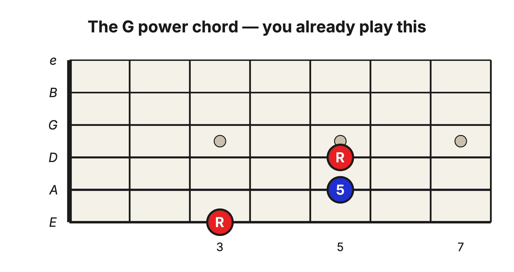
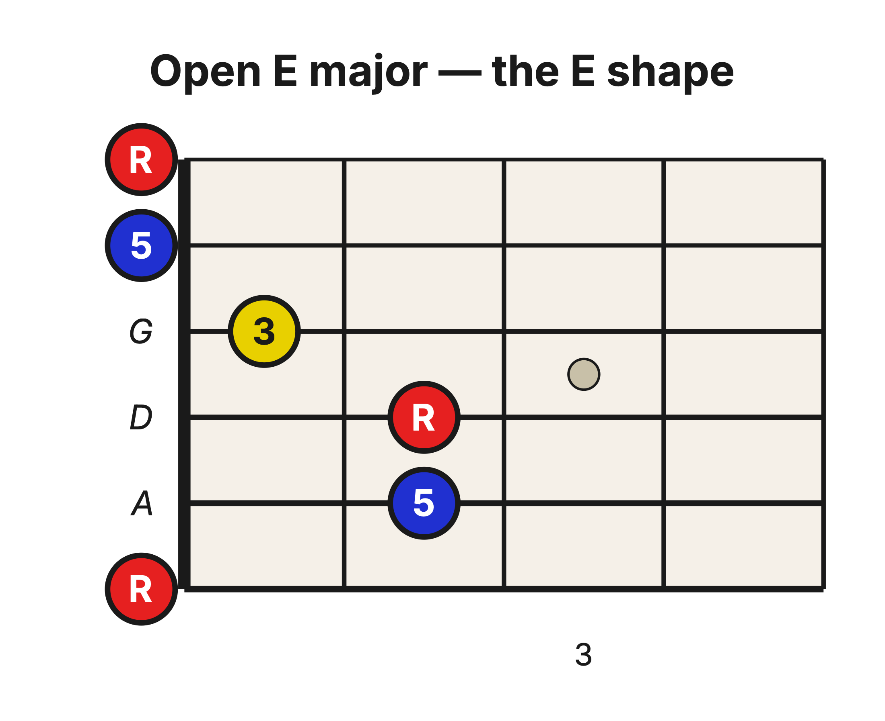
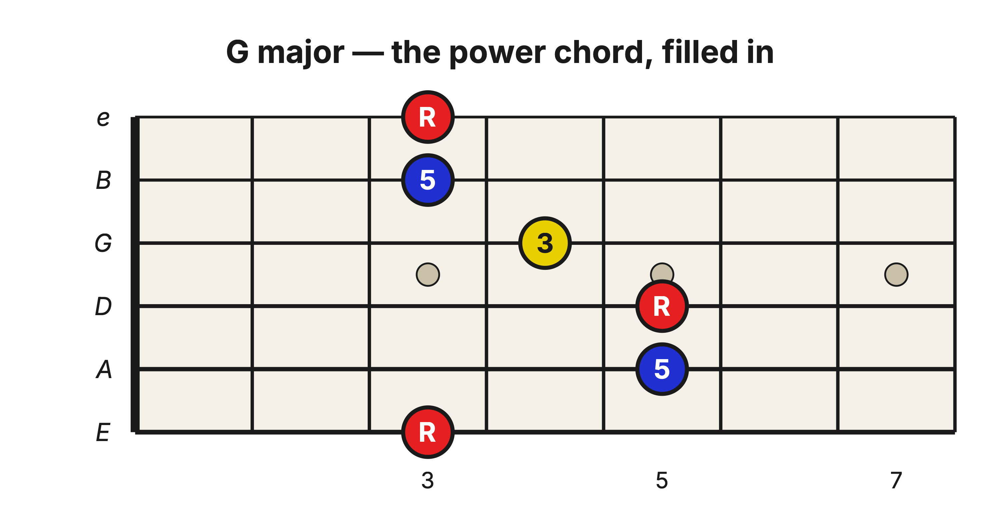
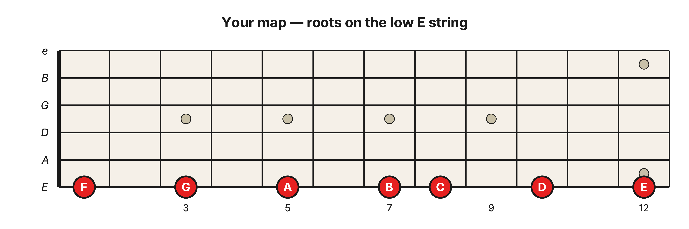
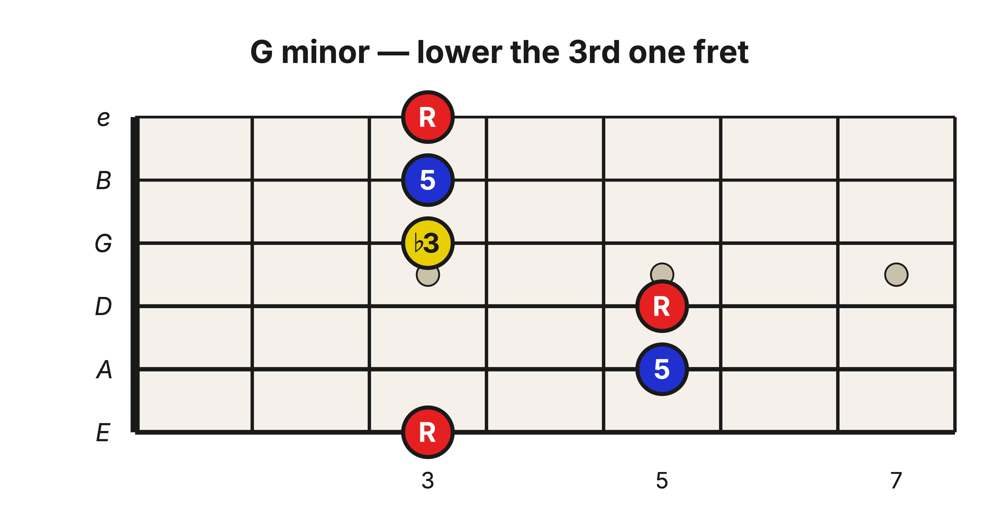
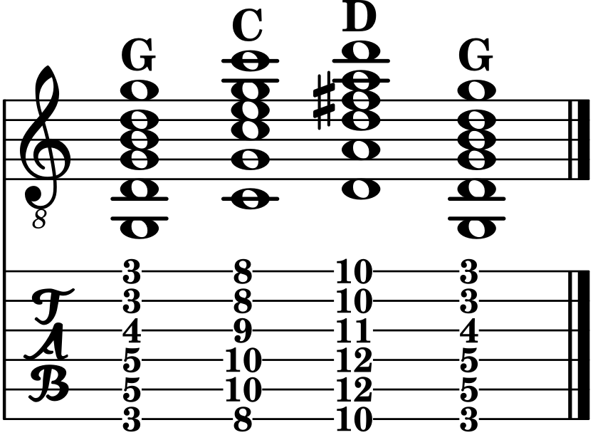

Level 2 · Chapter 15
The Fretboard: Your First Movable Chord (The E-Shape Barre)
When a painter starts a portrait, they sketch the outline first and fill it in afterward. Nobody builds a face from the ground up, one tiny detail at a time, hoping a person appears at the end. You rough in the shape, then you add what goes inside it.
Learning the guitar works the same way. In Level 1 you memorized the notes on the three bass strings and learned the power chord, and in the last few chapters you added the one note the power chord was missing: the 3rd. That is everything a full-sized chord needs. So in this chapter we rough in the outline: one movable grip that plays a real chord anywhere on the neck. We will keep filling it in over the chapters that follow.
You already play half of this chord
Think back to the power chord from Level 1. It is just two ideas stacked on the lowest strings: a root, and the 5th above it (with the root usually repeated an octave higher for fullness). Here it is with G as the root.

Your first finger sits on G, the low E string at the 3rd fret, a note you memorized back in Level 1. The other two notes are the 5th and the root again, an octave up. Nothing here is new.
What I never told you is that this little chord is the bottom half of a much bigger one. We are about to fill in the rest.
The E shape
The fullest chord you already know in open position is the open E major chord. Stop thinking of it as a set of finger positions and start looking at it as a shape.

Three different notes are doing all the work: the root (red), the 5th (blue), and one note in yellow, the 3rd. Look at the bottom three strings on their own. Root, 5th, root. That is the power chord again, hiding inside the E shape.
The only genuinely new note is that yellow 3rd. And it is the important one, because the 3rd is what gives the chord its bright, major sound. The power chord had no 3rd, which is why it sounded neither happy nor sad, just strong. Add the 3rd and the chord blooms into a full major chord.
Make the shape movable
The open E shape is stuck at the nut because it leans on open strings. To free it, lay your first finger flat across all six strings (this is called a barre) so it does the job the nut was doing. Now the whole shape can slide up the neck.

Barre across the 3rd fret and build the E shape with your other fingers. The note under your first finger on the low E string is G, so this chord is G major. And look at the bottom three strings: G, D, G. That is the exact G power chord from a moment ago, sitting right inside the bigger chord. You already owned half of this shape before you ever picked it up.
The middle of the chord is familiar too. Strum only the D, G, and B strings (5th fret, 4th fret, 3rd fret) and you get the triad staircase from the last chapter: G, B, D, a full G Major triad on the D-G-B set. A power chord on the bottom, a triad in the middle... five of these six strings were already under your fingers.
The low E string is your map
Here is where Level 1 pays off all at once. Because you memorized the low E string, you already know where every major chord lives. Find the root on the 6th string, lay the E shape behind it, and the chord takes the name of that root.

F is at the 1st fret, G at the 3rd, A at the 5th, C at the 8th, D at the 10th. Same shape every single time. You are not learning a new grip for each chord. You are learning one grip and reading the low E string to name it.
Major to minor is one finger
Inside the shape, that yellow 3rd is the one note that decides whether the chord is major or minor. Lower it by one fret (you lift the finger so the string drops back onto the barre) and the chord turns minor.

One note moved, and G major became G minor. Everything else stayed exactly where it was. The 5th, the roots, the power chord underneath: all unchanged. The whole difference between bright and dark lives in that single fret.
Now play something
Put the map to work. Slide the same E shape to three roots you already know on the low E string: G at the 3rd fret, C at the 8th, and D at the 10th. That gives you G, C, and D, three chords that have started a thousand songs.

Strum each chord a few times, then slide to the next. Same shape, new root, new name. Notice what you are doing while you play: you are reading the low E string to name every chord under your hand.
Stop for a second and take stock. You can play a major chord and a minor chord anywhere on the neck, and you can name each one as you go, because you built them on top of two things you already had: the notes on the low E string and the power chord. You sketched the outline first, exactly the way it should be done. From here, we fill it in.
Practice ladder: build the barre without forcing it
- At fret 3, place only the first-finger barre. Test all six strings separately, then release the hand.
- Add the E-shape fingers. Test the six strings separately and identify any muted or buzzing string before strumming.
- Play G Major for four clicks, then G minor for four clicks at 60 bpm. Name the G-string note that changed.
- Move the complete Major shape from G at fret 3 to A at fret 5 and back, four clicks per chord, for four complete cycles.
How to judge the result
Pass when every intended string rings in three consecutive slow attempts, the Major/minor change moves only the 3rd, and all four G-A-G cycles stay with the pulse. If a string fails, isolate that string and adjust finger placement before adding pressure. Stop and rest if the hand becomes painful or numb.